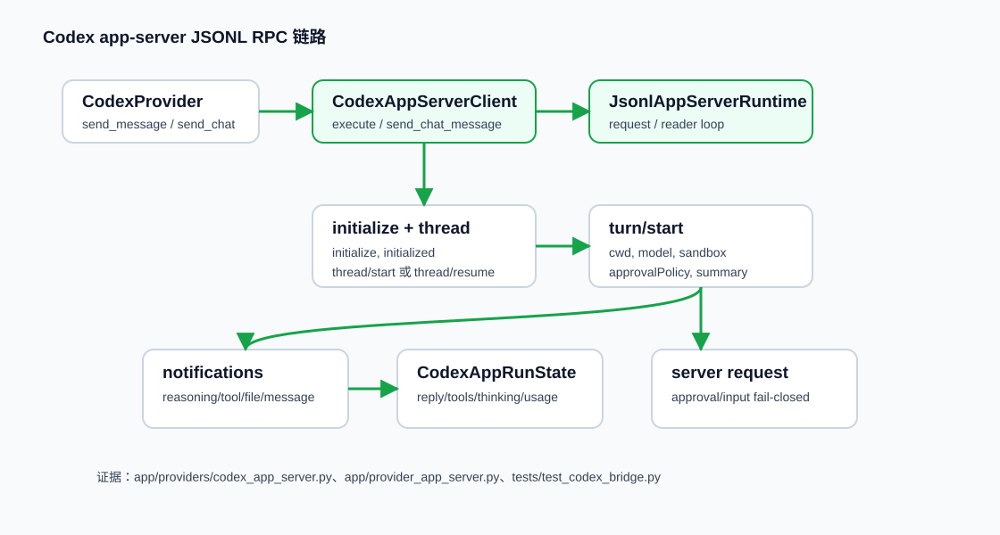

Codex app-server JSONL RPC bridge
Codex 的本地 live bridge 通过 `codex app-server --stdio` 与 Codex 进程做 JSONL RPC。VO 不直接解析 Codex CLI 普通文本输出，而是依赖 app-server 的 request、notification、server request 三类消息。
详细链路说明

1. VO adapter 选择 bridge
`CodexProvider.send_message` 校验 enabled/message，若 `reply_text` 不存在，就调用 `get_codex_bridge(workspace, model, bridge_url)`。有 `bridge_url` 时走 HTTP bridge；默认走本地 app-server。
2. 创建 CodexAppServerClient
client 记录 workspace、model、binary，并创建 `JsonlAppServerRuntime([binary, "app-server", "--stdio"])`。
3. initialize 协议
`_ensure_started` 启动进程，发送 `initialize`，声明 clientInfo 和 `experimentalApi`，再发送 `initialized` notification。
4. thread/start 或 thread/resume
没有 threadId 时创建新 thread；已有 conversation 映射时 resume。这里把 VO conversation 和 Codex native thread 连起来。
5. turn/start
turn payload 携带 prompt、cwd、model、approval policy、sandbox、reasoning summary 等执行参数。
6. notification 聚合状态
`_handle_notification` 把 reasoning delta、command output、fileChange、agentMessage、turn/completed 交给 `CodexAppRunState` 和 operation emit。
7. server request 处理 approval
Codex app-server 若要求 command/file/permission/input approval，会进入 `_handle_server_request`。允许交互时 pending，否则 fail closed 并 interrupt。
8. result 回到 server.py
完成后 result 包含 reply、threadId、turnId、tools、thinking、modifiedFiles、approval、tokenUsage，再由 `normalize_provider_result` 统一合同。
关键代码摘录
# app/providers/codex_app_server.py
self._runtime = JsonlAppServerRuntime(
[self.binary, "app-server", "--stdio"],
cwd=self.workspace,
name="codex-app-server",
stderr=subprocess.PIPE,
)
self._runtime.on_server_request = self._handle_server_request
self._runtime.on_notification = self._handle_notification这段证明 Codex bridge 的本地路径是 stdio JSONL RPC 子进程。
# app/provider_app_server.py
if "id" in message and ("result" in message or "error" in message) and not message.get("method"):
target.put(message)
elif "id" in message and message.get("method"):
self.on_server_request(message)
else:
self.on_notification(method, params)runtime 不理解 Codex 语义，只把三类 JSONL 消息分发给 adapter。
数据流与分支
| 阶段 | 输入 | 输出 | 分支/异常 |
|---|---|---|---|
| bridge selection | workspace、model、bridgeUrl | app-server client 或 HTTP client | external bridge 能力相对本地交互不完全对等 |
| initialize | clientInfo、capabilities | codexHome/account 状态 | 启动失败返回 bridge_unavailable |
| turn | prompt、threadId、summary、sandbox | turnId、notifications | timeout 会重启 runtime 重试部分请求 |
| state | agentMessage、reasoning、tool、fileChange | reply、thinking、tools、modifiedFiles | approval server request 进入专门链路 |
自己验证一下
.venv/bin/python tests/test_provider_app_server_runtime.py
.venv/bin/python tests/test_codex_bridge.py
.venv/bin/python tests/test_codex_provider.py这些测试使用 fake Codex executable，不要求真实 Codex 登录。预期：`test_provider_app_server_runtime.py passed`，Codex bridge/provider 测试通过。失败时检查 `APPROVAL_METHODS`、`turn/completed`、`VO_CODEX_REASONING_SUMMARY`。
| 观察点 | 看什么 |
|---|---|
| `app/providers/codex_app_server.py` `_ensure_started` | initialize 是否返回；`experimentalApi` 是否传入。 |
| `app/providers/codex_app_server.py` `_handle_notification` | reply、thinking、tools、modifiedFiles 是否进 `CodexAppRunState`。 |
关键概念补充
ConversationId 到 threadId 映射：VO 用 conversationId 表示办公室会话，Codex 原生用 threadId；server.py 负责保存和复用这个映射。
Shim-preserved import compatibility：`codex_bridge.py` 当前只 re-export，但保留旧 import，避免旧测试或模块路径崩掉。